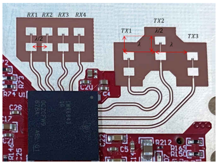
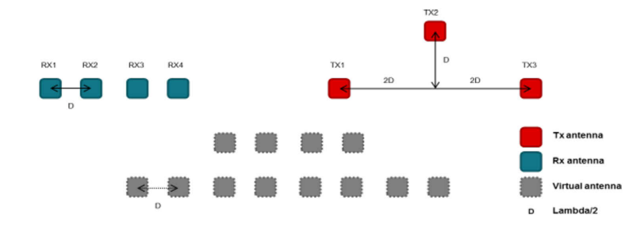
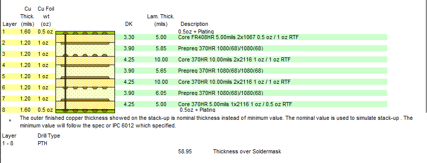
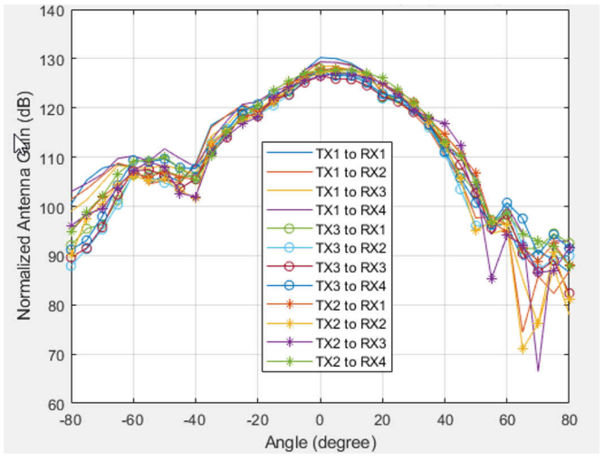
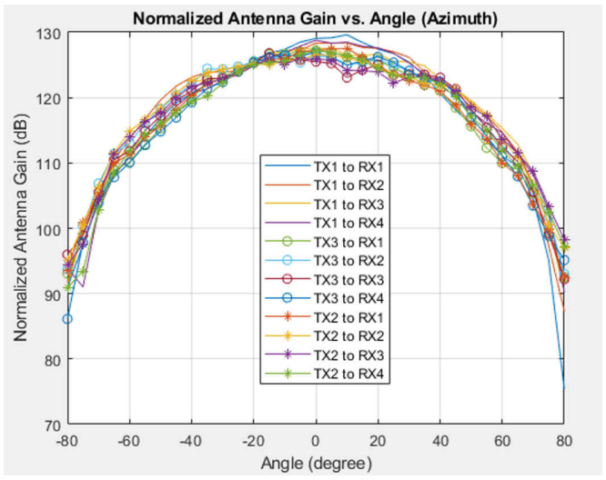

Introduction
============
IWR6843L EVM antenna is designed to be operated in 60GHz frequency range.
The use cases which can be addressed with this antenna are fluid level sensing, industrial automation, motion detection etc.
| Design | Azimuth FOV (deg)* | Elevation FOV (deg)* | Azimuth Angular Resolution(deg) | Elevation Angular Resolution (deg) | Max Distance for Person (m) ** |
|--------|--------------------|----------------------|---------------------------------|------------------------------------|--------------------------------|
|IWR6843L (60GHz) | +/-60 | +/-40 | 15 | 58 | 35 |
A comparison table of all antenna configurations can be on the [Industrial Toolbox Antennas overview page](../../antennas_landing.html).
IWR6843L EVM Antenna Picture & Dimensions
=============================================


The antenna peak gain of IWR6843L EVM Antenna is about 5-6 dBi across the operating frequency band of 60 GHz.
For more details about this EVM, please refer to the following link:
http://www.ti.com/tool/iwr6843levm
IWR6843L EVM Stackup
========================
Please refer to below PCB stackup details for IWR6843L Antenna.

The mmWave layer is core material with FR408HR 5.00mils construction using 2x1067 spread glass type and 0.5 oz / 1 oz RTF copper. ED (electro-deposited) copper is not a suitable material for mmWave frequencies.
Detailed layout of this antenna with stackup are available for you to download and reuse at the following link:
https://www.ti.com/lit/zip/swrr179
Measured Radiation Patterns
============================
Measured radiation patterns of IWR6843L EVM Antenna for Elevation and Azimuth can be seen below.


In the above pictures X axis represents the angle (in degrees) and Y axis represents the normalized gain (in dB). This radiation pattern is measured inside a Anechoic chamber with a corner reflector. The FMCW chirp used for this measurement has a start frequency of 62GHz and a RF bandwidth of 2GHz.
Manufacturing Guidelines
========================
The details on manufacturing this antenna can be found in the “TI mmWave Radar Sensor RF PCB Design, Manufacturing and Validation Guide" - http://www.ti.com/lit/pdf/spracg5
Board Manufacturer
==================
TTM Technologies - https://www.ttm.com/en
Material Details
================
Isola Group - https://www.isola-group.com/